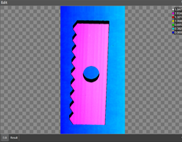
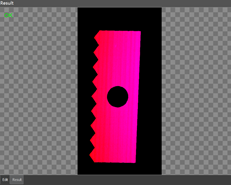
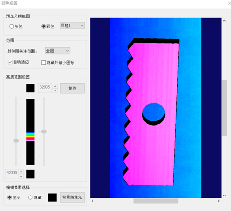

深度图像转RGB图像工具的功能是将16位深度图像转换为RGB图像，功能类似颜色图，其中高度范围设置的最大值、最小值采用物理实际Z值，工具根据输入值线性映射到合适的范围内，用于去除干扰点，获取较为理想的RGB图像，如图1、2所示。
 

| 分类 | 参数名称 | 参数描述 |
|---|---|---|
| 属性窗口 | 颜色图关注范围 | 分为3种：整幅图像、仿射矩形、圆形。 |
| 自动模式 | 是否由算法自动确定最小深度值、最大深度值。 | |
| 最小深度值 | 真实Z值，取值范围受图像Z轴方向分辨率及Z方向偏移控制，小于此值将被作为干扰点过滤掉。 | |
| 最大深度值 | 真实Z值，取值范围受图像Z轴方向分辨率及Z方向偏移控制，大于此值将被作为干扰点过滤掉。 | |
| 深度图颜色模式 | 分为2种，转化为灰色图像或彩色图像。 | |
| 彩虹条类型 | 分为2种，彩虹1或彩虹2。 | |
| 图像窗口 | 深度图像 | 显示待检测的深度图像，显示为伪彩色图像。 |
| 检测区域 | 在图像上显示待检测区域。 | |
| 数据链 | 输入深度图像 | 输入待检测的深度图像。 |
| 二维线性变换 | 目标相对于模板的平移、旋转、缩放变换。 | |
| 高级界面 | 无 |
| 分类 | 参数名称 | 参数描述 |
|---|---|---|
| 监视窗口 | 输出RGB图像 | 输出图像的长宽和像素大小。 |
| 执行结果 | 工具执行结果。 | |
| 执行时间 | 工具执行时间。 | |
| 图像窗口 | 输入深度图像 | 显示检测的深度图像，显示为伪彩色图像。 |
| 输出RGB图像 | 显示转换成的RGB图像。 | |
| 数据链 | 同监视窗口参数，供后续工具使用。 |
深度图像转RGB图像工具的原理是将深度值(真实Z值)按照线性映射函数转换到[0 , 65535]范围，同时可以设置深度最大值、深度最小值排除一些Z值较低或较高的干扰点获取较为理想的RGB图像。
参见“\Samples\3D\深度图\深度图像转RGB图像工具.gvp”。